Collective Biographies of WomenAn Annotated Bibliography
Alison Booth
207.
Creighton, Louise. Some Famous Women. Illustrated. London: Longmans, Green, 1909; [1923?].
See How To Make It as a Woman, 66-67.
Search OCLC WorldCat for this title.
Search Google Books for this title.
Creighton, Louise. Some Famous Women. Illustrated. London: Longmans, Green, 1909; [1923?].
See How To Make It as a Woman, 66-67.
TOC: Saint Hilda; Joan Countess of Kent, Wife of Black Prince (Son of Edward III of England); Joan of Arc; Margaret Beaufort; Rachel, Lady Russell; Elizabeth Fry; Mary Somerville; Julia Selina Inglis; Florence Nightingale; Isabella Bird (Mrs. Bishop); Sister Dora; Queen Victoria.
Author of children's histories of England and France; Heroes of European History; The Art of Living and Other Addresses to Girls; biographies of male rulers.
See also Pop Chart-
 Whitby Abbey
Whitby Abbey -
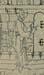The Ark
-
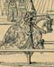Tournament
-
 Knight and Lady
Knight and Lady -
 Joan of Arc
Joan of Arc -
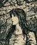Joan of Arc
-
 Joan of Arc
Joan of Arc -
 Joan of Arc
Joan of Arc -
 Joan of Arc
Joan of Arc -
 Joan of Arc
Joan of Arc -
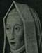Margaret Beaufort
-
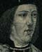Edward IV
-
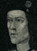Richard III
-
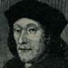Henry VII
-
 Elizabeth of York
Elizabeth of York -
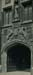Christ's College
-
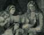Lord Russell
-
 Elizabeth Fry
Elizabeth Fry -
 Elizabeth Fry
Elizabeth Fry -
 Mary Somerville
Mary Somerville -
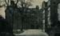Somerville College
-
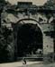Lucknow Gateway
-
 Florence Nightingale
Florence Nightingale -
 Florence Nightingale
Florence Nightingale -
 Florence Nightingale
Florence Nightingale -
 Isabella Bird (Mrs. Bishop)
Isabella Bird (Mrs. Bishop) -
 Sister Dora
Sister Dora -
 Sister Dora Statue
Sister Dora Statue -
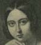Queen Victoria
-
 Queen Victoria
Queen Victoria -
 Prince Albert
Prince Albert -
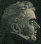Viscount Melbourne
-
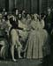Queen Victoria
-
 Lord Palmerston
Lord Palmerston -
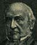William Gladstone
-
 Queen Victoria
Queen Victoria -
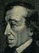Benjamin Disraeli
-
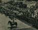Victoria's Jubilee
Search OCLC WorldCat for this title.
Search Google Books for this title.